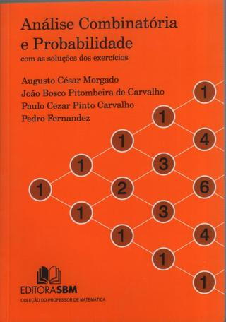
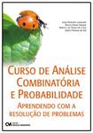
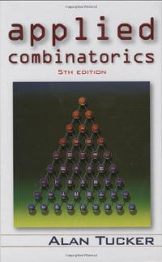

Horário: 3as e 5as, das 8h às 10h.
Início: 5 de abril de 2016.
Repositório do código criado em sala de aula:
https://github.com/vigusmao/MatComb_2016_1
Ementa muito resumida:
- Técnicas de Contagem
- Binômio de Newton, Triângulo de Pascal
- Relações de Recorrência
- Introdução à Teoria dos Grafos
Bibliografia sugerida
| Análise Combinatória e Probabilidade | Curso de Análise Combinatória e Probabilidade | Applied Combinatorics | |||
| (Morgado, Pitombeira, Carvalho e Fernandes) | (J. R. Julianeli, B. A. Dassie, M. L. Alves de Lima e I. Pereira de Sá) | (Alan Tucker) | |||
|  |  |  |
Conteúdo das aulas
05/04
Introdução à Combinatória. Princípio multiplicativo (Princípio Fundamental da Contagem). Decisões sequenciadas no tempo. Permutações simples. Recomendação geral: começar pelas restrições. Técnica da partição (resolvendo as situações do tipo "depende!"). Técnica da complementação (relaxamento de restrições seguido da subtração da quantidade de elementos indesejados).
Problema 1: Quantas taças de sorvete (uma bola de sorvete, uma cobertura) distintas são oferecidas em uma sorveteria que dispõe de 30 sabores de sorvete e de 4 tipos de cobertura?
Problema 2: De quantas maneiras distintas podemos estacionar 3 carros em 3 vagas de garagem (um carro por vaga)?
Problema 3: De quantas maneiras podem se sentar ao redor de uma mesa redonda 5 pessoas (A, B, C, D e E) de forma que duas delas (A e B) não fiquem lado a lado?
Problema 4: De quantas maneiras podem se posicionar em linha 7 pessoas (A, B, C, D, E, F e G) de forma que duas delas (A e B) não fiquem lado a lado?
Problema 5: De quantas maneiras podem se posicionar em linha 7 pessoas de forma que duas delas (digamos, A e B) fiquem lado a lado?
07/04
Os dois testes básicos:
1) Cada elemento do conjunto que me interessa pode ser obtido pela sequência de decisões que foi escolhida? (Resposta esperada: SIM!)
2) É possível obter um mesmo elemento através de escolhas diferentes ao longo da sequência escolhida? (Resposta esperada: NÃO!) Se um dos testes falhar, é preciso definir uma outra sequência de decisões, ou usar alguma técnica auxiliar.
Problema 6: Se dispomos de 5 tintas de cores distintas, de quantas maneiras podemos pintar uma bandeira que possui 3 faixas verticais?
Problema 7: E se as faixas precisarem ser pintadas cada qual com um cor distinta das outras?
Problema 8: Novamente, se dispomos de 5 tintas diferentes (uma das quais é a cor verde) e uma bandeira de 3 faixas, de quantas maneiras podemos pintar a bandeira com cores distintas garantindo que pelo menos uma das faixas receba a cor verde?
Problema 9: E como ficaria o problema anterior se não houvesse a exigência de que as cores das faixas fossem todas distintas?
Perceba que no Problema 9 a maneira mais intuitiva (para muitos) de raciocinar -- que seria aquela pela qual começaríamos escolhendo logo uma das faixas para pintarmos de verde, garantindo assim que a exigência fosse de imediato atendida -- leva quase com certeza a uma resposta errada. De fato, a sequência de decisões pela qual escolhemos uma faixa para pintar de verde, depois escolhemos uma cor qualquer para a faixa mais à esquerda que ainda está sem cor, e escolhemos finalmente uma cor qualquer para a última faixa nos possibilita obter uma mesma atribuição de cores de diversas maneiras. Por exemplo, uma bandeira com as 3 faixas pintadas de verde pode ser obtida de 3 formas diferentes (dependendo da faixa que escolhamos para ser pintada de verde na primeira decisão). Duas boas maneiras de se resolver o problema aqui são: (i) quebrar em casos, de acordo com o número de faixas (1, 2 ou 3) que receberão a cor verde (Técnica da partição); ou (ii) contar quantas são todas as maneiras possíveis de se pintar a bandeira e subtrair o número de maneiras em que nenhuma faixa recebe a cor verde (Técnica da complementação).
19/04
Problema 10: Quantas novas cores podem ser produzidas da mistura uniforme de 3 tintas de cores distintas escolhidas de um total de 4 cores distintas de tintas?
Nos casos em que elementos são contados repetidas vezes de maneira uniforme, isto é, cada elemento é contado exatamente o mesmo número de vezes, podemos ignorar inicialmente essa redundância e dividir no final pelo número de vezes em que cada elemento é contado, isto é, pela quantidade de caminhos na árvore de decisões que levam a um único dos elementos em que estamos interessados.
Combinação de n elementos, p a p. Fórmula deduzida. Combinações complementares.
Problema 11: Quantas comissões distintas de 6 alunos poderíamos formar em uma turma de 30 alunos?
Problema 12: Quantas comissões distintas de 3 alunos e 3 alunas poderíamos formar em uma turma de 20 alunos e 10 alunas?
Combinações completas. A técnica dos "separadores".
Problema 13: De quantas maneiras podemos guardar 10 bolas-de-gude idénticas se dispomos de 5 latas distintas?
Problema 14: E se não quisermos deixar latas vazias?
26/04
Equações diofantinas.
Problema 15: Quantas sacolas distintas contendo 4 potes de sorvete de qualquer sabor (repetições permitidas!) podemos comprar em uma sorveteria que vende potes de sorvete em 10 sabores diferentes (e estoque ilimitado)?
28/04
Permutações com elementos repetidos. Anagramas.
Problema 16: Quantos são os anagramas da palavra CADERNO?
Problema 17: E de URUGUAI?
Problema 18: E de URUGUAIANA?
Problema 19: Quantos números maiores do que 1.000.000 pode ser formados permutando os algarismos do número 567788800?
Problema 21: Quantos anagramas da palavra CANETA não possuem a substring "NE"?
Problema 21: Quantos anagramas da palavra CANETA não possuem as letras N e E consecutivas em qualquer ordem?
Problema 22: Quantos anagramas da palavra CANETA não possuem as letras N e A consecutivas em qualquer ordem? (Note que muda bastante...)
03/05
O Princípio da Inclusão/Exclusão. Solução do Problema 22.
Problema 23: Quantos inteiros existem entre 1 e 100 que são múltiplos de 2, 3 ou 5?
Problema 24: Quantas são as permutações caóticas de n elementos?
Programinha em Python para contar (e listar) permutações caóticas. Código no GitHub.
05/05
Problema 25: Dados um conjunto A e um conjunto B, com |A| = n e |B| = n, quantas funções distintas existem de A em B?
Problema 26: Dessas funções, quantas são injetoras? Problema 27: Quantas são bijetoras? Problema 28: Quantas são sobrejetoras? (Este é o mais difícil. Use o Princípio da Inclusão/Exclusão.)
10/05
O modelo da partícula em movimento sempre para cima ou para a direita.
O modelo da partícula em movimento sempre para a direita subindo ou descendo (45 graus).
O Princípio da Reflexão para lidar com situações em que se deseje forçar a passagem da partícula por uma certa ordenada (linha horizontal).
Problema 29: Quantos caminhos existem do ponto (0,0) ao ponto (100, 16)? Problema 30: Desses, quantos possuem algum ponto com ordenada -1 (isto é, quantos passam pela reta y=-1)? Problema 31: Em uma eleição com dois candidatos A e B em que A venceu por uma margem de 16 votos, de um total de 100 eleitores, em quantas das apurações possíveis de votos (em que os votos vão sendo computados um por um e não houve votos nulos ou em branco) o candidato vencedor jamais se viu em desvantagem? Problema 32: A casa de Bob fica no ponto de coordenadas (0,0) de um reticulado, e sua escola fica no ponto (8, 10). Caminhando sempre para cima ou para a direita no reticulado, quantos são os caminhos possíveis que levam Bob de sua casa à sua escola passando por uma padaria que fica no ponto (4, 4) do mapa?